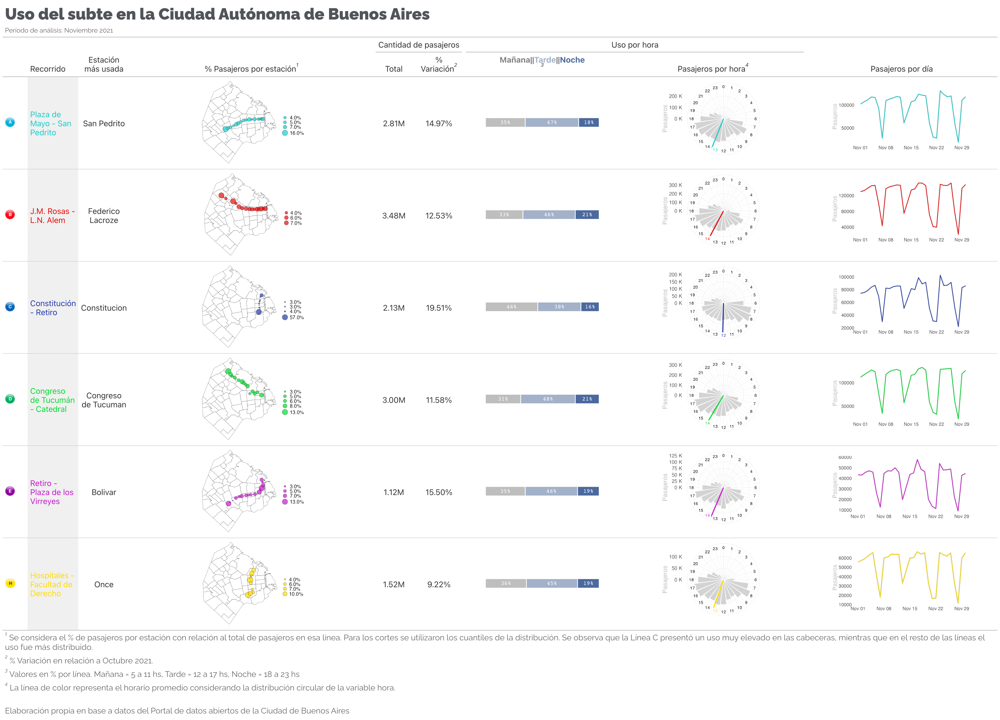
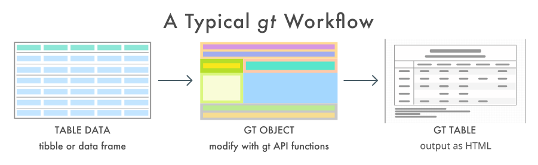
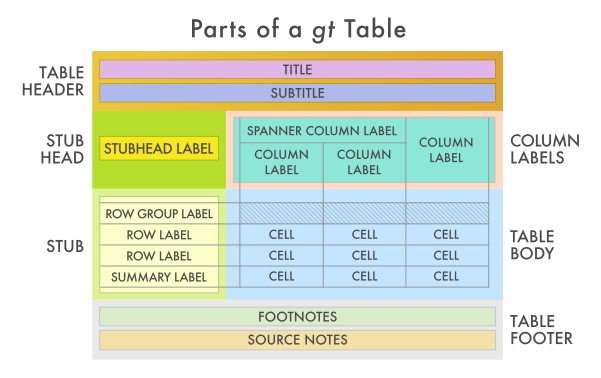
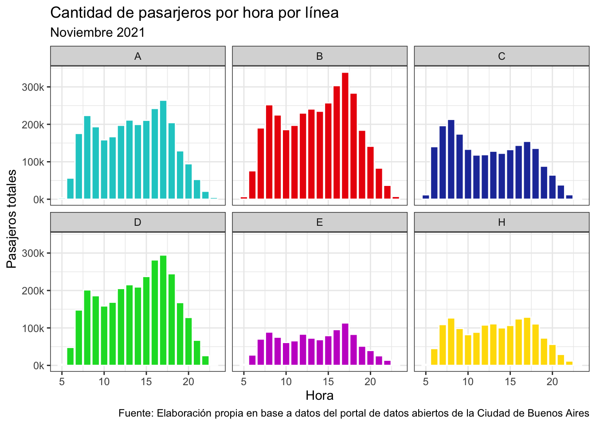
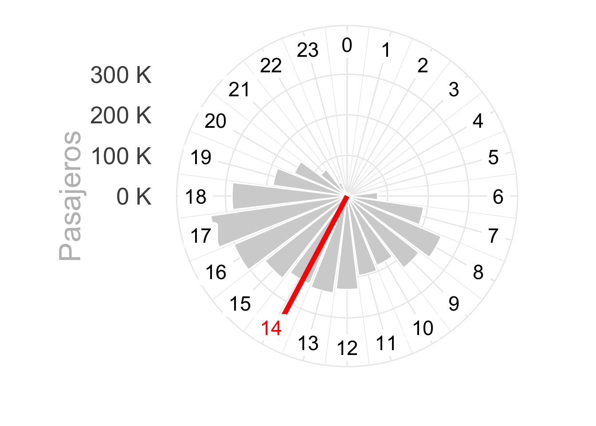
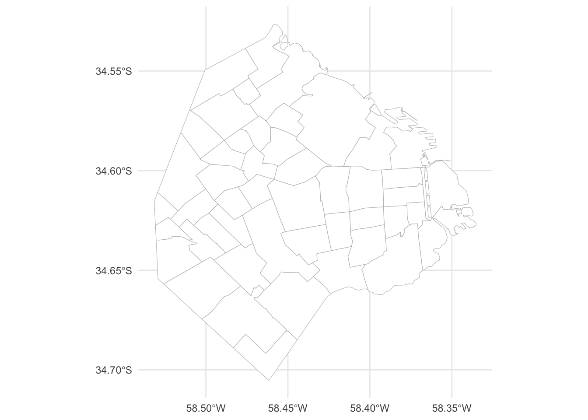
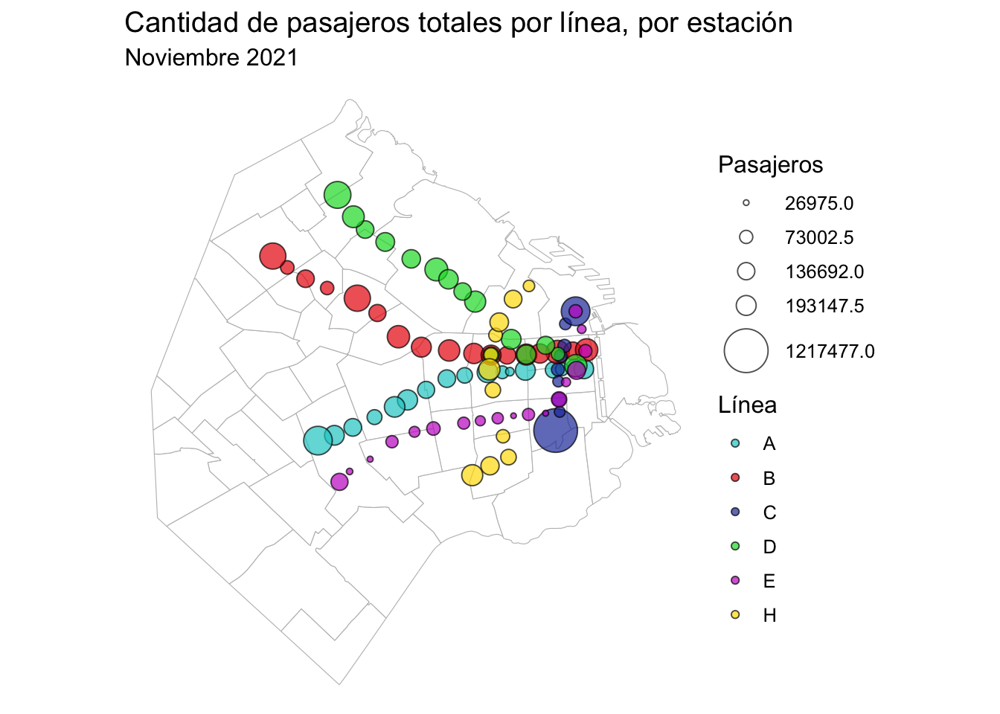
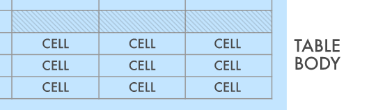

knitr::include_graphics('tabla_subtes.png')
El paquete {ggplot2} 📦1 es uno de los paquetes más utilizados para la visualización de datos en R. Está basado en the Grammar of Graphics, Wilkinson (2012), y permite generar gráficos mediante capas. Por otro lado, the Grammar of Tables {gt} 📦 2 se utiliza para generar tablas con una estructura similar a la de {ggplot2}, utilizando capas. Ambos enfoques pueden combinarse generando tablas que incluyen gráficos. En este caso, armé un ejemplo con datos provistos por el portal de datos abiertos de la Ciudad Autónoma de Buenos Aires. La idea de este post surgió de una publicación de Benjamin Nowak en Twitter.
En este post se muestran los pasos para generar la siguiente tabla:
knitr::include_graphics('tabla_subtes.png')
The grammar of tables se basa en la siguiente estructura:
knitr::include_graphics('images/gt_workflow_diagram.svg')
En donde las tablas tienen un formato específico, generado mediante capas:
knitr::include_graphics('images/gt_parts_of_a_table.svg')
Se cargan las librerías a utilizar. Principalmente se utilizarán {ggplot2}, incluida en el ecosistema Tidyverse3, y {gt}.
library(tidyverse) # Manipulación de datos
library(lubridate) # Manipulación de fechas
library(circular) # Datos periódicos
library(gt) # Tablas
library(gtExtras) # Extras de tablas gt
library(gtsummary) # Tablas resúmen
library(reshape) # Untable
library(sf) # Trabajar con mapas
library(stringr)
conflicted::conflict_prefer("filter", "dplyr")
conflicted::conflict_prefer("select", "dplyr")
options(scipen=999)Se importan los datos de viajes en subte de la Ciudad Autónoma de Buenos Aires, en Noviembre 2021.
base_url = 'https://cdn.buenosaires.gob.ar/datosabiertos/datasets/sbase/subte-viajes-molinetes/'
mes_url = 'molinetes_112021.csv'
df <- read_delim(
paste0(base_url, mes_url),
delim = ';',
col_types = cols(FECHA = col_date("%d/%m/%Y"))
) %>%
# Limpieza de los nombres de las columnas
janitor::clean_names() %>%
# Existen algunos datos sin fecha
filter(!is.na(fecha)) %>%
# Hora en formato correcto
mutate(hora = hour(desde)) %>%
# Se asigna el color correspondiente a cada línea
mutate(
linea=str_replace(linea, 'Linea',''),
color = case_when(
linea == 'A' ~ '#18cccc',
linea == 'B' ~ '#eb0909',
linea == 'C' ~ '#233aa8',
linea == 'D' ~ '#02db2e',
linea == 'E' ~ '#c618cc',
linea == 'H' ~ '#ffdd00',
TRUE ~ 'black'
)
) %>%
# Selección de variables relevantes
select(linea, color, fecha, desde, hasta, hora, linea, molinete, estacion,
pax_pagos, pax_pases_pagos, pax_franq, pax_total)Se obtienen los datos del mes anterior para generar comparaciones:
mes_url = 'molinetes_102021.csv'
df_oct <- read_delim(
paste0(base_url, mes_url),
delim = ';',
col_types = cols(FECHA = col_date("%d/%m/%Y"))
) %>%
# Limpieza de los nombres de las columnas
janitor::clean_names() %>%
# Existen algunos datos sin fecha
filter(!is.na(fecha)) %>%
# Hora en formato correcto
mutate(hora = hour(desde)) %>%
# Se asigna el color correspondiente a cada línea
mutate(linea=str_replace(linea, 'Linea',''))df %>% select(-color) %>%
head(5) %>%
gt() %>%
tab_header(title=md('**Formato de los datos (primeras 5 filas)**'),
subtitle='Cantidad de pasajeros por molinete
y por estación de todas las estaciones de la
red de subte, Noviembre 2021') %>%
opt_align_table_header('left') %>%
tab_footnote(locations=cells_column_labels(columns=molinete),
'Se ignorará el molinete específico y se considerarán
los datos agregados a nivel estación')| Formato de los datos (primeras 5 filas) | ||||||||||
|---|---|---|---|---|---|---|---|---|---|---|
| Cantidad de pasajeros por molinete y por estación de todas las estaciones de la red de subte, Noviembre 2021 | ||||||||||
| linea | fecha | desde | hasta | hora | molinete1 | estacion | pax_pagos | pax_pases_pagos | pax_franq | pax_total |
| C | 2021-11-01 | 05:30:00 | 05:45:00 | 5 | LineaC_Indepen_Turn03 | Independencia | 0 | 0 | 2 | 2 |
| A | 2021-11-01 | 05:30:00 | 05:45:00 | 5 | LineaA_Pasco_Turn03 | Pasco | 1 | 0 | 0 | 1 |
| B | 2021-11-01 | 05:30:00 | 05:45:00 | 5 | LineaB_Malabia_N_Turn05 | Malabia | 0 | 0 | 1 | 1 |
| B | 2021-11-01 | 05:30:00 | 05:45:00 | 5 | LineaB_Gallardo_S_Turn02 | Angel Gallardo | 1 | 0 | 0 | 1 |
| A | 2021-11-01 | 05:30:00 | 05:45:00 | 5 | LineaA_Congreso_S_Turn03 | Congreso | 0 | 0 | 1 | 1 |
| 1 Se ignorará el molinete específico y se considerarán los datos agregados a nivel estación | ||||||||||
Se observa la distribución de pasajeros por hora. La cantidad total de pasajeros difiere entre líneas.
df %>%
group_by(linea, color, hora) %>%
summarise(pax_total=sum(pax_total)) %>%
ungroup() %>%
ggplot(aes(x=hora, y=pax_total, fill=color))+
geom_col(color='white')+
scale_fill_identity()+
facet_wrap(~linea)+
scale_y_continuous(labels = scales::label_number(suffix = "k",
scale = 1e-3,
big.mark = ","))+
theme_bw()+
labs(x='Hora', y='Pasajeros totales',
title='Cantidad de pasarjeros por hora por línea',
subtitle='Noviembre 2021',
caption='Fuente: Elaboración propia en base a datos del portal de datos abiertos de la Ciudad de Buenos Aires')
Se realizan algunas transformaciones y se generan las funciones que luego se utilizarán para generar gráficos a incorporar a una tabla.
Función para obtener la hora promedio:
get_hour <- function(.linea, .df) {
temp <- .df %>%
filter(linea == .linea) %>%
select(hora, pax_total)
hora <- untable(temp, num = temp$pax_total) %>%
select(-pax_total) %>%
mutate(hora_circular = circular(hora,
template = "clock24",
units = "hours")) %>%
summarise(hora = mean(hora_circular)) %>%
pull(hora)
as.numeric(hora) %% 24
}Función para generar un gráfico circular de la cantidad de pasajeros por hora por línea de subte:
plot_clock <- function(.linea, .df, .color = 'black', .hora_promedio) {
temp <- data.frame(hora = seq(0, 23)) %>%
left_join(
.df %>%
filter(linea == .linea) %>%
group_by(hora) %>%
summarise(pax_total = sum(pax_total)) %>%
ungroup()
) %>%
mutate(color_hora = ifelse(hora == round(.hora_promedio), TRUE, FALSE)) %>%
mutate(pax_total = ifelse(is.na(pax_total), 0, pax_total))
temp %>%
ggplot(aes(x = hora, y = pax_total)) +
geom_col(color = 'white', fill = 'lightgrey') +
coord_polar(start = 0) +
geom_vline(xintercept = .hora_promedio,
color = .color,
size = 2) +
geom_label(
aes(
x = hora,
y = max(pax_total) + quantile(pax_total, 0.3),
color = color_hora,
label = hora
),
size = 6,
label.size = NA,
show.legend = FALSE
) +
scale_color_manual(values = c('black', .color)) +
scale_x_continuous(
"",
limits = c(0, 24),
breaks = seq(0, 24),
labels = seq(0, 24)
) +
scale_y_continuous(labels = scales::unit_format(unit = "K", scale = 1e-3)) +
labs(y = 'Pasajeros') +
theme_minimal() +
theme(text = element_text(size = 25, color = 'grey'),
axis.text.x = element_blank())
}Test de la función
plot_clock(.df=df, .linea='B', .color='red',
.hora_promedio=get_hour(.linea='B',.df=df))
estacion_mas_usada <- df %>%
group_by(linea, estacion_mas_usada = estacion) %>%
summarise(pax_total = sum(pax_total)) %>%
group_by(linea) %>%
slice(which.max(pax_total)) Se cargan los datos del geojson de barrios de la Ciudad Autónoma de Buenos Aires:
# Mapa barrios CABA
caba <- st_read('http://cdn.buenosaires.gob.ar/datosabiertos/datasets/barrios/barrios.geojson', quiet = TRUE) %>%
mutate(barrio=str_to_title(BARRIO))
mapa <- ggplot()+
geom_sf(data = caba,
color = "grey",
fill = 'white',
size = 0.1,
show.legend = FALSE)+
theme_minimal()
mapa
Se incluyen los datos de latitud y longitud de cada estación:
PATH_ESTACIONES_SIMPLE = "https://cdn.buenosaires.gob.ar/datosabiertos/datasets/sbase/subte-estaciones/estaciones-de-subte.csv"
estaciones_simple <- readr::read_delim(PATH_ESTACIONES_SIMPLE, delim=';',
locale = locale(decimal_mark = ",")) %>%
mutate(estacion = str_to_title(estacion)) %>%
mutate(estacion = iconv(estacion, from="UTF-8",to="ASCII//TRANSLIT")) %>%
select(linea, estacion, lat, long)
PATH_ESTACIONES_ACCESIBLES = "https://cdn.buenosaires.gob.ar/datosabiertos/datasets/sbase/subte-estaciones/estaciones-accesibles.csv"
estaciones_accesibles <- readr::read_delim(PATH_ESTACIONES_ACCESIBLES, delim=';',
locale = locale(decimal_mark = ",")) %>%
mutate(estacion = str_to_title(estacion)) %>%
mutate(estacion = iconv(estacion, from="UTF-8",to="ASCII//TRANSLIT")) %>%
select(linea, estacion, lat, long)
estaciones <- estaciones_accesibles %>%
bind_rows(estaciones_simple) %>%
mutate(
estacion = case_when(
estacion == 'Saenz Pena' ~ 'Saenz Peña',
estacion == 'Humberto 1?' ~ 'Humberto I',
estacion == 'R.scalabrini Ortiz' ~ 'Scalabrini Ortiz',
estacion == 'Plaza De Los Virreyes - Eva Peron' ~ 'Pza. De Los Virreyes',
estacion == 'Aguero' ~ 'Agüero',
estacion == 'San Martin' ~ 'General San Martin',
str_detect(estacion, 'Carranza') ~ 'Ministro Carranza',
TRUE ~ estacion
)
)
estaciones <- estaciones[!duplicated(estaciones[, 1:2]), ]
df_pasajeros_estaciones <- df %>%
group_by(linea, color, estacion) %>%
summarise(pax_total = sum(pax_total)) %>%
mutate(estacion = str_trim(str_to_title(estacion))) %>%
mutate(
estacion = case_when(
estacion == 'Flores' ~ 'San Jose De Flores',
estacion == 'Saenz Peña ' ~ 'Saenz Peña',
estacion == 'Callao.b' ~ 'Callao',
estacion == 'Retiro E' ~ 'Retiro',
estacion == 'Independencia.h' ~ 'Independencia',
estacion == 'Pueyrredon.d' ~ 'Pueyrredon',
estacion == 'General Belgrano' ~ 'Belgrano',
estacion == 'Rosas' ~ 'Juan Manuel De Rosas',
estacion == 'Patricios' ~ 'Parque Patricios',
estacion == 'Mariano Moreno' ~ 'Moreno',
TRUE ~ estacion
)
) %>%
left_join(estaciones, by = c("linea" = "linea", "estacion" = "estacion"))Mapa de todas las estaciones juntas:
lbreaks <- round(quantile(df_pasajeros_estaciones$pax_total,
c(0,0.25,0.5,0.75,1)),2) %>%
as.numeric()
ggplot() +
geom_sf(data = caba,
color = "grey",
fill = 'white',
size = 0.1,
show.legend = FALSE)+
geom_point(data = df_pasajeros_estaciones,
aes(x = long, y = lat, size=pax_total, fill=linea),
alpha=0.7, color='black', shape=21)+
scale_size_continuous(breaks = lbreaks, range=c(1,10),
limits=c(min(df_pasajeros_estaciones$pax_total),
max(df_pasajeros_estaciones$pax_total)))+
scale_fill_manual(values=unique(df_pasajeros_estaciones$color %>% unique()))+
theme_void()+
theme(text = element_text(size = 12),
legend.position = 'right',
axis.text = element_blank(),
plot.margin = unit(c(0, 0, 0, 0), "null"))+
labs(x='',y='',size='Pasajeros', fill='Línea',
title='Cantidad de pasajeros totales por línea, por estación',
subtitle='Noviembre 2021')
Estaciones individuales para la tabla:
plot_mapa <- function(.df, .linea){
temp <- .df %>%
filter(linea==.linea) %>%
mutate(pax_percent = pax_total / sum(pax_total))
lbreaks <- round(quantile(temp$pax_percent, c(0,0.25,0.5,0.75,1)),2) %>%
as.numeric()
ggplot() +
geom_sf(data = caba,
color = "black",
fill = 'white',
size = 0.1,
show.legend = FALSE)+
geom_point(data = temp,
aes(x = long, y = lat, size=pax_percent), alpha=0.7,
fill = temp$color %>% unique(), color='black', shape=21)+
scale_size_continuous(breaks = lbreaks, range=c(1,10),
limits=c(min(temp$pax_percent),max(temp$pax_percent)),
labels = scales::percent(lbreaks, accuracy=0.1))+
theme_void()+
theme(text = element_text(size = 25),
legend.position = 'right',
axis.text = element_blank(),
plot.margin = unit(c(0, 0, 0, 0), "null"))+
labs(x='',y='',size='')
}Cantidad de pasajeros por estación en Octubre 2021:
df_pasajeros_mesprevio <- df_oct %>%
group_by(linea) %>%
summarise(pax_total_oct = sum(pax_total)) Se genera el tibble que contiene los datos para luego generar la tabla:
datos_tabla <- tibble(linea = sort(unique(df$linea))) %>%
# Recorridos
mutate(
recorrido = case_when(
linea == 'A' ~ 'Plaza de Mayo - San Pedrito',
linea == 'B' ~ 'J.M. Rosas - L.N. Alem',
linea == 'C' ~ 'Constitución - Retiro',
linea == 'D' ~ 'Congreso de Tucumán - Catedral',
linea == 'E' ~ 'Retiro - Plaza de los Virreyes',
linea == 'H' ~ 'Hospitales - Facultad de Derecho',
TRUE ~ 'black'
)
) %>%
# Colores
mutate(
color = case_when(
linea == 'A' ~ '#18cccc',
linea == 'B' ~ '#eb0909',
linea == 'C' ~ '#233aa8',
linea == 'D' ~ '#02db2e',
linea == 'E' ~ '#c618cc',
linea == 'H' ~ '#ffdd00',
TRUE ~ 'black'
)
) %>%
# Cantidad de viajes realizados en cada línea
left_join(df %>%
mutate(hora_grupo = cut(
hora,
breaks = 3,
labels = c('Mañana', 'Tarde', 'Noche')
)) %>%
group_by(linea, hora_grupo) %>%
summarise(pax_total = sum(pax_total)) %>%
group_by(linea) %>%
mutate(pax_percent = round(pax_total / sum(pax_total)*100)) %>%
group_by(linea) %>%
summarise(pasajeros_tipo = list(pax_percent))) %>%
left_join(df %>%
group_by(linea) %>%
summarise(pax_total = sum(pax_total))) %>%
left_join(df_pasajeros_mesprevio) %>%
mutate(variacion=(pax_total/pax_total_oct-1)) %>%
# Hora promedio por línea
mutate(hora_promedio = map(linea, ~get_hour(.linea=.x, .df=df))) %>%
mutate(hora_promedio = unlist(hora_promedio)) %>%
# Gráfico de cantidad de pasajeros por hora por línea
mutate(reloj_plot = pmap(
list(linea, color, hora_promedio),
~ plot_clock(
.linea = ..1,
.df = df,
.color = ..2,
.hora_promedio = ..3
)
)) %>%
# Gráfico de la evolución de cantidad de pasajeros por línea
mutate(
evolucion_plot = map2(
linea,
color,
~ df %>% filter(linea == .x) %>%
group_by(fecha) %>%
summarise(n = sum(pax_total)) %>%
ggplot(aes(x = fecha, y = n)) +
geom_line(color = 'grey', size = 2.5) +
geom_line(color = .y, size = 1.5) +
# scale_y_continuous(labels = scales::unit_format(unit = "K", scale = 1e-3)) +
theme_minimal() +
labs(x = '', y = 'Pasajeros') +
theme(
text = element_text(size = 30),
axis.title.y = element_text(color = 'grey'),
panel.grid = element_blank()
)
)
) %>%
mutate(linea_imagen = here::here('posts', 'subte_tabla', 'lineas', paste0(
tolower(linea), '.jpg'
))) %>%
# Mapa por línea:
mutate(mapa = map(linea, ~ plot_mapa(.df = df_pasajeros_estaciones,
.linea = .x))) %>%
# Estación más utilizada por línea
left_join(estacion_mas_usada %>% select(-pax_total))Se utiliza el paquete {gt} para generar la tabla que contiene plots de {ggplot2}
tabla <- datos_tabla %>%
# Selección de variables relevantes y orden:
select(
linea,
linea_imagen,
recorrido,
estacion_mas_usada,
mapa,
pax_total,
variacion,
pasajeros_tipo,
reloj_plot,
evolucion_plot
) %>%
# Se genera la tabla
gt() De momento se centrará el análisis en las columnas con datos simples, sin considerar las que incluyen gráficos.
tabla %>%
cols_hide(columns = c(pasajeros_tipo, linea_imagen, mapa, reloj_plot, evolucion_plot)) | linea | recorrido | estacion_mas_usada | pax_total | variacion |
|---|---|---|---|---|
| A | Plaza de Mayo - San Pedrito | San Pedrito | 2812536 | 0.14967023 |
| B | J.M. Rosas - L.N. Alem | Federico Lacroze | 3476972 | 0.12526534 |
| C | Constitución - Retiro | Constitucion | 2129704 | 0.19508052 |
| D | Congreso de Tucumán - Catedral | Congreso de Tucuman | 2995373 | 0.11576720 |
| E | Retiro - Plaza de los Virreyes | Bolivar | 1120315 | 0.15501869 |
| H | Hospitales - Facultad de Derecho | Once | 1515556 | 0.09222728 |
Tabla inicial
Considerando la estructura de tablas de la Figura 2, se comienza por el título y subtitulo:
tabla <- tabla %>%
# Título y subtitulo
tab_header(
title = md('**Uso del subte en la Ciudad Autónoma de Buenos Aires**'),
subtitle = 'Período de análisis: Noviembre 2021'
) %>%
# Alineación izquierda
opt_align_table_header('left') %>%
# Estilo
tab_style(locations = cells_title(groups = 'title'),
style = list(
cell_text(
font = google_font(name = 'Raleway'),
size = 'xx-large',
weight = 'bold',
align = 'left',
color = '#515459'
)
)) %>%
tab_style(locations = cells_title(groups = 'subtitle'),
style = list(
cell_text(
font = google_font(name = 'Raleway'),
size = 'small',
align = 'left',
color = '#666666'
)
))Excluyendo las columnas de gráficos, el formato de la tabla actual es el siguiente:
tabla %>%
cols_hide(columns = c(pasajeros_tipo, linea_imagen, mapa, reloj_plot, evolucion_plot))| Uso del subte en la Ciudad Autónoma de Buenos Aires | ||||
|---|---|---|---|---|
| Período de análisis: Noviembre 2021 | ||||
| linea | recorrido | estacion_mas_usada | pax_total | variacion |
| A | Plaza de Mayo - San Pedrito | San Pedrito | 2812536 | 0.14967023 |
| B | J.M. Rosas - L.N. Alem | Federico Lacroze | 3476972 | 0.12526534 |
| C | Constitución - Retiro | Constitucion | 2129704 | 0.19508052 |
| D | Congreso de Tucumán - Catedral | Congreso de Tucuman | 2995373 | 0.11576720 |
| E | Retiro - Plaza de los Virreyes | Bolivar | 1120315 | 0.15501869 |
| H | Hospitales - Facultad de Derecho | Once | 1515556 | 0.09222728 |
Tabla inicial
Siguiendo la estructura, es momento de definir los nombres y formato de las columnas:
tabla <- tabla %>%
# Renombrar variables
cols_label(
linea = md('Linea'),
recorrido = md('Recorrido'),
mapa = md('% Pasajeros por estación'),
reloj_plot = md('Pasajeros por hora'),
pasajeros_tipo = md('Momento del día'),
pax_total = md('Total'),
variacion = md('% Variación'),
evolucion_plot = md('Pasajeros por día'),
estacion_mas_usada = md('Estación más usada')
) %>%
# Alineación
cols_align('center',
columns = c(
'pax_total','variacion',
'estacion_mas_usada',
'reloj_plot',
'evolucion_plot')
) %>%
# Ancho de las columnas
cols_width(linea ~ px(50),
linea_imagen ~ px(50),
recorrido ~ px(100),
estacion_mas_usada ~ px(80),
reloj_plot ~ px(20),
pax_total ~ px(80),
variacion ~ px(100)) %>%
# Spanners: agrupamiento de columnas
tab_spanner(
label = "Uso por hora",
columns = c(pasajeros_tipo, reloj_plot)
) %>%
tab_spanner(
label= "Cantidad de pasajeros",
columns = c(pax_total, variacion)
)tabla %>%
cols_hide(columns = c(pasajeros_tipo, linea_imagen, mapa, reloj_plot, evolucion_plot))| Uso del subte en la Ciudad Autónoma de Buenos Aires | ||||
|---|---|---|---|---|
| Período de análisis: Noviembre 2021 | ||||
| Linea | Recorrido | Estación más usada |
Cantidad de pasajeros
|
|
| Total | ||||
| A | Plaza de Mayo - San Pedrito | San Pedrito | 2812536 | 0.14967023 |
| B | J.M. Rosas - L.N. Alem | Federico Lacroze | 3476972 | 0.12526534 |
| C | Constitución - Retiro | Constitucion | 2129704 | 0.19508052 |
| D | Congreso de Tucumán - Catedral | Congreso de Tucuman | 2995373 | 0.11576720 |
| E | Retiro - Plaza de los Virreyes | Bolivar | 1120315 | 0.15501869 |
| H | Hospitales - Facultad de Derecho | Once | 1515556 | 0.09222728 |
Tabla inicial
El siguiente paso es definir cuestiones sobre el contenido de la tabla. Esta es la parte fundamental y es donde las columnas de gráficos podrán ser visualizadas luego de una transformación adicional.

La primera columna de la tabla es la imágen correspondiente a cada línea. Se quiere que aparezca como imágen (no como path). Para ello, se utiliza la función text_transform() para aplicar local_image() a cada una de las imágenes contenidas en la tabla mediante paths. Luego se renombra a la columna, eliminando el nombre ya que es redundante.
tabla <- tabla %>%
# Iconos de cada línea
text_transform(
locations = cells_body(columns = c(linea_imagen)),
fn = function(linea_imagen) {
lapply(linea_imagen, local_image, height = 20)
}
) %>%
cols_label(linea_imagen = '')Se transforma el color del texto de recorrido según la línea:
tabla <- tabla %>%
# Colores de los textos
tab_style(
style = cell_text(color = "#18cccc"),
locations = cells_body(columns = c(recorrido),
rows = linea == "A")
) %>%
tab_style(
style = cell_text(color = "#eb0909"),
locations = cells_body(columns = c(recorrido),
rows = linea == "B")
) %>%
tab_style(
style = cell_text(color = "#233aa8"),
locations = cells_body(columns = c(recorrido),
rows = linea == "C")
) %>%
tab_style(
style = cell_text(color = "#02db2e"),
locations = cells_body(columns = c(recorrido),
rows = linea == "D")
) %>%
tab_style(
style = cell_text(color = "#c618cc"),
locations = cells_body(columns = c(recorrido),
rows = linea == "E")
) %>%
tab_style(
style = cell_text(color = "#ffdd00"),
locations = cells_body(columns = c(recorrido),
rows = linea == "H")
) %>%
# La línea oculta, con la imagen alcanza
cols_hide(linea) %>%
# Fondo gris en el recorrido
tab_style(style = list(cell_fill(color = "#f0f0f0")),
locations = cells_body(columns = c('recorrido')))tabla %>%
cols_hide(columns = c(pasajeros_tipo, mapa, reloj_plot, evolucion_plot))| Uso del subte en la Ciudad Autónoma de Buenos Aires | ||||
|---|---|---|---|---|
| Período de análisis: Noviembre 2021 | ||||
| Recorrido | Estación más usada |
Cantidad de pasajeros
|
||
| Total | ||||
![]() |
Plaza de Mayo - San Pedrito | San Pedrito | 2812536 | 0.14967023 |
![]() |
J.M. Rosas - L.N. Alem | Federico Lacroze | 3476972 | 0.12526534 |
![]() |
Constitución - Retiro | Constitucion | 2129704 | 0.19508052 |
![]() |
Congreso de Tucumán - Catedral | Congreso de Tucuman | 2995373 | 0.11576720 |
![]() |
Retiro - Plaza de los Virreyes | Bolivar | 1120315 | 0.15501869 |
![]() |
Hospitales - Facultad de Derecho | Once | 1515556 | 0.09222728 |
Se puede utilizar ciertas funciones de {gt} para formatear las columnas dependiendo del formato de cada variable.
tabla <- tabla %>%
# Formato numérico
fmt_number(pax_total, suffixing = TRUE) %>%
# Formato de porcentaje
fmt_percent(variacion)Además, se utiliza la función gt_plt_stack() del paquete {gtExtras} para incorporar gráficos del % de uso de cada línea según el momento del día:
tabla <- tabla %>%
gt_plt_bar_stack(
column = pasajeros_tipo,
position = 'fill',
labels = c("Mañana","Tarde","Noche"),
palette = c('grey', '#A3B1C9','#4C699E'),
fmt_fn = scales::label_percent(scale=1),
width = 60)tabla %>%
cols_hide(columns = c(mapa, reloj_plot, evolucion_plot))| Uso del subte en la Ciudad Autónoma de Buenos Aires | |||||
|---|---|---|---|---|---|
| Período de análisis: Noviembre 2021 | |||||
| Recorrido | Estación más usada |
Cantidad de pasajeros
|
Uso por hora
|
||
| Total |
Mañana||Tarde||Noche
|
||||
|
Plaza de Mayo - San Pedrito | San Pedrito | 2.81M | 14.97% | |
|
J.M. Rosas - L.N. Alem | Federico Lacroze | 3.48M | 12.53% | |
|
Constitución - Retiro | Constitucion | 2.13M | 19.51% | |
|
Congreso de Tucumán - Catedral | Congreso de Tucuman | 3.00M | 11.58% | |
|
Retiro - Plaza de los Virreyes | Bolivar | 1.12M | 15.50% | |
|
Hospitales - Facultad de Derecho | Once | 1.52M | 9.22% | |
Para las 3 columnas de gráficos ggplot2 es necesario aplicar nuevamente la función text_transform() pero en este caso se utiliza ggplot_image para transformar estas listas contenidas en el dataframe original a gráficos.
tabla <- tabla %>%
# Ggplots en formato gráfico (sino aparecen como texto)
text_transform(
locations = cells_body(columns = reloj_plot),
fn = function(x) {
map(
datos_tabla$reloj_plot,
gt::ggplot_image,
height = px(180),
aspect_ratio = 2
)
}
) %>%
text_transform(
locations = cells_body(columns = evolucion_plot),
fn = function(x) {
map(
datos_tabla$evolucion_plot,
gt::ggplot_image,
height = px(140),
aspect_ratio = 2
)
}
) %>%
text_transform(
locations = cells_body(columns = mapa),
fn = function(x) {
map(
datos_tabla$mapa,
gt::ggplot_image,
height = px(180),
aspect_ratio = 2
)
}
) Finalmente, se incluyen algunas anotaciones y opciones genreales de la tabla:
tabla <- tabla %>%
tab_footnote(cells_column_labels(columns = variacion),
footnote = '% Variación en relación a Octubre 2021.') %>%
tab_footnote(cells_column_labels(columns = reloj_plot),
footnote = 'La línea de color representa el horario promedio
considerando la distribución circular de la variable hora.') %>%
tab_footnote(cells_column_labels(columns = mapa),
footnote = 'Se considera el % de pasajeros por estación con
relación al total de pasajeros en esa línea. Para los cortes
se utilizaron los cuantiles de la distribución. Se observa que
la Línea C presentó un uso muy elevado en las cabeceras,
mientras que en el resto de las líneas el uso fue más
distribuido.') %>%
tab_footnote(cells_column_labels(columns = pasajeros_tipo),
footnote = 'Valores en % por línea. Mañana = 5 a 11 hs, Tarde = 12 a 17 hs, Noche = 18 a 23 hs') %>%
tab_source_note(
source_note = html(
"<div><br>Elaboración propia en base a datos del Portal de datos
abiertos de la Ciudad de Buenos Aires</br></div>")
) %>%
tab_style(locations = cells_source_notes(),
style = list(cell_text(
font = google_font(name = 'Raleway'),
size = 'medium',
align = 'left',
color = '#666666'
))) %>%
tab_style(locations = cells_footnotes(),
style = list(cell_text(
font = google_font(name = 'Raleway'),
size = 'medium',
align = 'left',
color = '#666666'
))) %>%
# Opciones de la tabla
tab_options(
data_row.padding = px(0),
table.border.top.style = "hidden",
table.border.bottom.style = "hidden",
table_body.border.top.style = "solid",
column_labels.border.bottom.style = "solid"
)Se guarda la tabla definiendo el tamaño:
gt::gtsave(tabla, 'tabla_subtes.png',
vwidth = 2000, vheight = 3000)sessioninfo::package_info() %>%
filter(attached==TRUE) %>%
select(package, loadedversion, date, source) %>%
gt() %>%
tab_header(title='Paquetes utilizados',
subtitle='Versiones') %>%
opt_align_table_header('left')| Paquetes utilizados | |||
|---|---|---|---|
| Versiones | |||
| package | loadedversion | date | source |
| circular | 0.5-1 | 2024-08-29 | CRAN (R 4.3.3) |
| dplyr | 1.1.4 | 2023-11-17 | CRAN (R 4.3.1) |
| forcats | 1.0.0 | 2023-01-29 | CRAN (R 4.3.0) |
| ggplot2 | 3.5.2 | 2025-04-09 | CRAN (R 4.3.3) |
| gt | 1.0.0 | 2025-04-05 | CRAN (R 4.3.3) |
| gtExtras | 0.6.0 | 2025-05-29 | CRAN (R 4.3.3) |
| gtsummary | 1.7.2 | 2023-07-15 | CRAN (R 4.3.0) |
| lubridate | 1.9.3 | 2023-09-27 | CRAN (R 4.3.1) |
| purrr | 1.0.2 | 2023-08-10 | CRAN (R 4.3.0) |
| readr | 2.1.5 | 2024-01-10 | CRAN (R 4.3.1) |
| reshape | 0.8.10 | 2025-06-19 | CRAN (R 4.3.3) |
| sf | 1.0-21 | 2025-05-15 | CRAN (R 4.3.3) |
| stringr | 1.5.1 | 2023-11-14 | CRAN (R 4.3.1) |
| tibble | 3.2.1 | 2023-03-20 | CRAN (R 4.3.0) |
| tidyr | 1.3.1 | 2024-01-24 | CRAN (R 4.3.1) |
| tidyverse | 2.0.0 | 2023-02-22 | CRAN (R 4.3.0) |